Notable Botanical Illustrators
The artists featured on this page each made their own mark on botanical illustration. From Maria Sibylla Merian's studies of insects and their relationships with plants to Margaret Mee's documentation of rare Amazonian species, their work helped expand our understanding of the natural world. Pierre-Joseph Redouté brought flowers to life through his detailed watercolors, capturing the beauty of roses and lilies. Although they worked in different places and periods, each artist combined artistic talent with careful observation to create work that continues to be appreciated today.
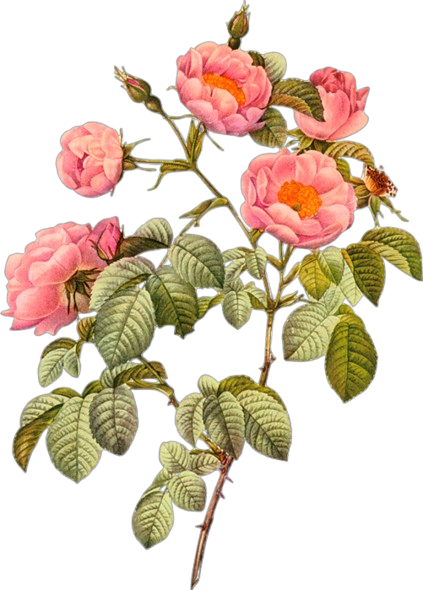
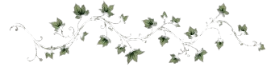
Featured Illustrators
Maria Sibylla Merian
1647–1717
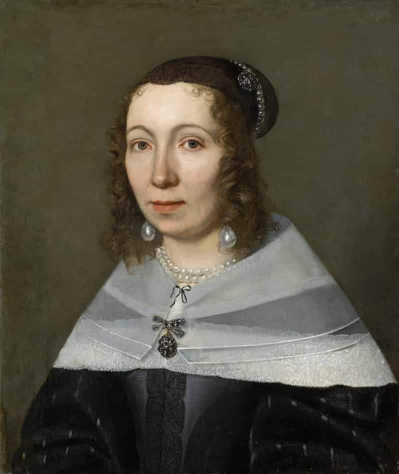
Maria Sibylla Merian was a German-Dutch naturalist, entomologist, and scientific illustrator known for her detailed paintings of insects and plants. Fascinated by insects from a young age, she began collecting and studying caterpillars at just 13 years old. Through her observations, she helped disprove the belief that insects spontaneously generated, demonstrating instead how they develop through distinct stages of metamorphosis.
Merian combined her artistic skills with scientific research, illustrating the relationships between insects and the plants they depended on. In 1699, at the age of 52, she traveled to Suriname in South America with her younger daughter to document tropical plants and wildlife. Her observations became the foundation for her influential 1705 publication, Metamorphosis Insectorum Surinamensium, featuring detailed illustrations of tropical insects, plants, and animals.
At a time when scientific exploration was largely dominated by men, Merian established herself as an independent researcher and artist. Her work helped advance the study of entomology and influenced generations of botanical and scientific illustrators. Today, she is remembered for bringing together art, science, and a deep curiosity about the natural world.
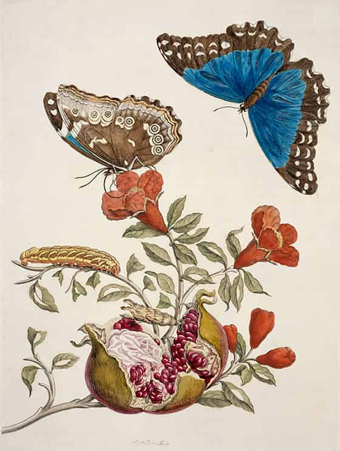
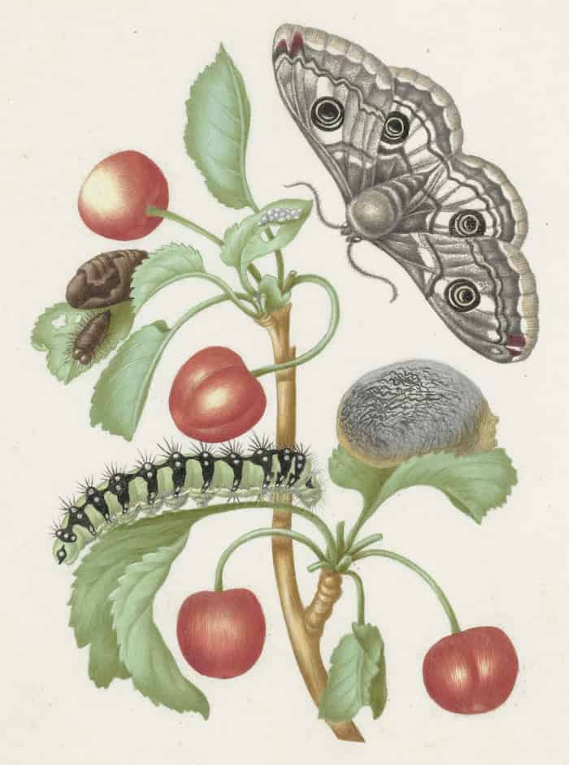
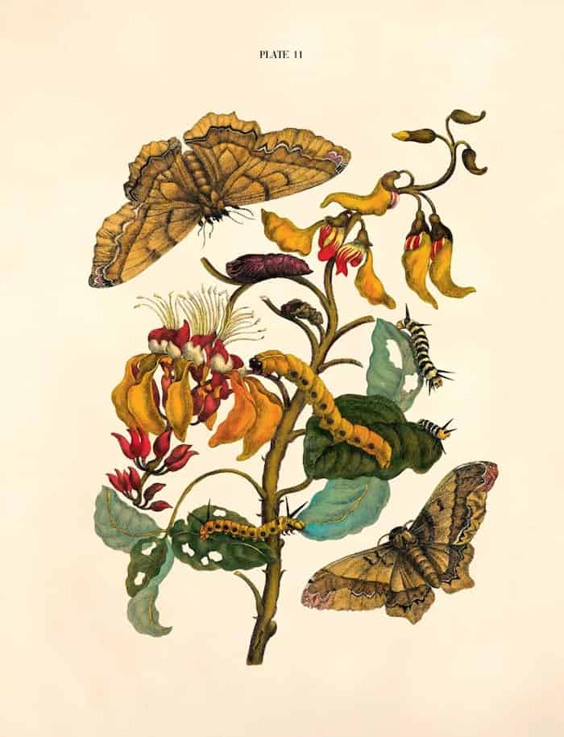
Pierre-Joseph Redouté
1759–1840
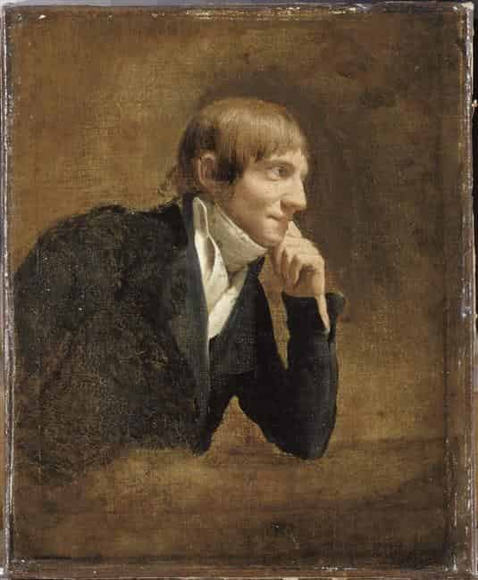
Pierre-Joseph Redouté was a French-Belgian painter and botanical illustrator best known for his detailed watercolor paintings of roses, lilies, and other flowers. Nicknamed the “Raphael of flowers,” he became one of the most celebrated botanical artists of his time.
Redouté began working as an artist at just 13 years old before moving to Paris, where he met botanists who introduced him to botanical illustration. His talent eventually brought him to the attention of Queen Marie Antoinette, who appointed him as an official court artist. He later worked for Empress Joséphine, the first wife of Napoleon Bonaparte, painting plants from the gardens of the Château de Malmaison.
Throughout his career, Redouté collaborated with leading botanists and produced more than 2,100 published illustrations depicting over 1,800 plant species. He was known for painting from live plants rather than preserved specimens, which helped give his work its vivid colors and natural appearance. His most famous publications include Les Roses and Les Liliacées.
Redouté continued teaching and painting until his death in 1840. His illustrations remain influential today and are admired for combining scientific accuracy with artistic beauty.
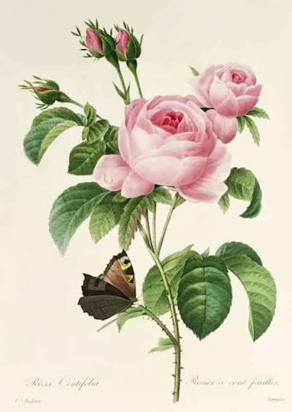
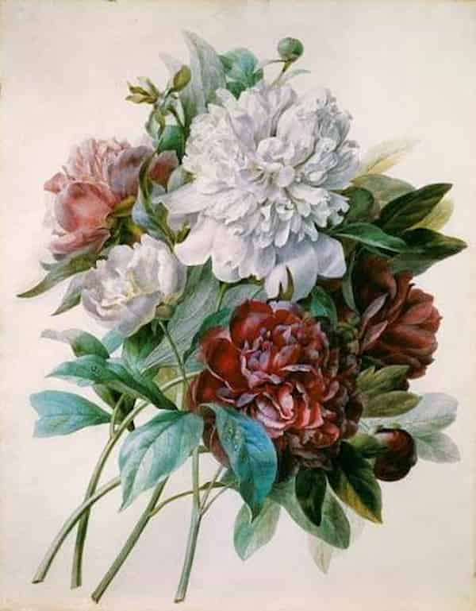
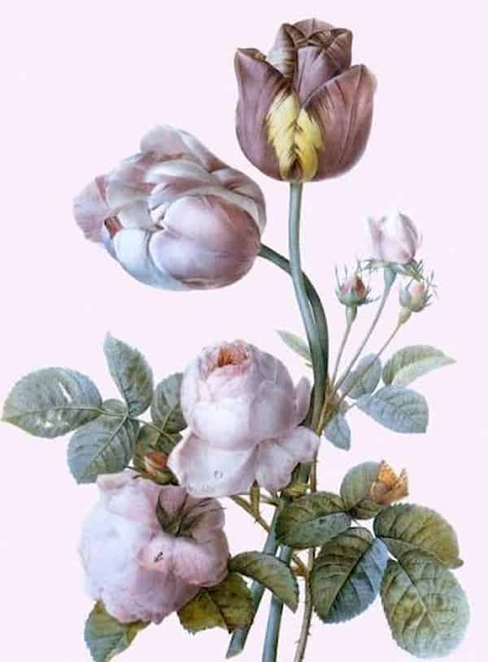
Margaret Mee
1909–1988
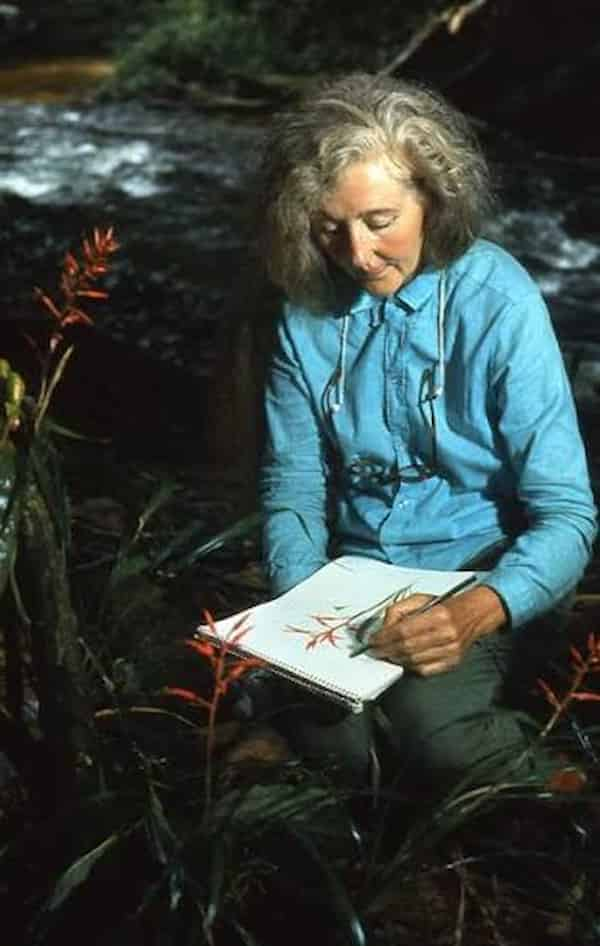
Margaret Mee was a British botanical artist best known for her detailed illustrations of plants native to the Brazilian Amazon rainforest. Originally trained as an artist in England, she moved to Brazil in 1952, where she developed a passion for documenting the region's unique plant life. In 1958, she began working as a botanical artist for São Paulo's Instituto de Botânica, allowing her to explore the rainforest and study its diverse vegetation.
Over the course of her career, Mee completed approximately 400 botanical illustrations, along with dozens of sketchbooks and diaries documenting her expeditions. Her artwork captured many rare and previously undocumented plants, combining scientific accuracy with vibrant artistic detail. One of her most famous pursuits was searching for the Amazon moonflower, a rare cactus that blooms only at night.
Beyond her artwork, Mee became an outspoken environmental activist, raising awareness about the destruction of the Amazon rainforest caused by deforestation and mining. Her dedication to Brazilian botany earned her several honors, including an MBE in 1976 and Brazil's Order of the Southern Cross in 1979.
Mee died in 1988, but her illustrations remain an important part of botanical art and are preserved largely in the collections of the Royal Botanic Gardens, Kew. She is remembered not only for documenting the beauty of the Amazon but also for using her art to advocate for its protection.
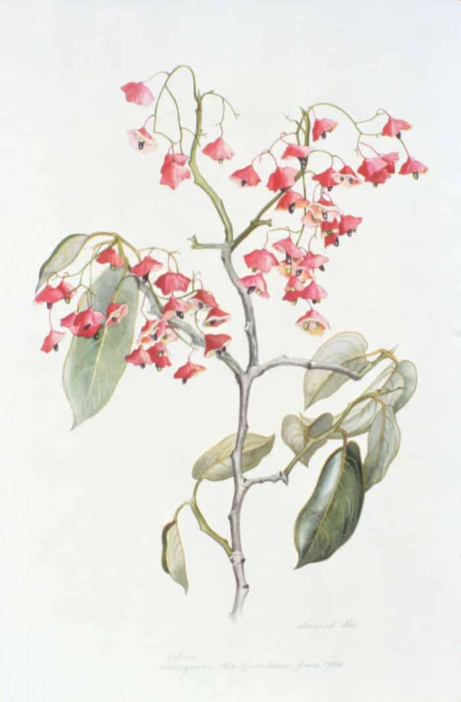
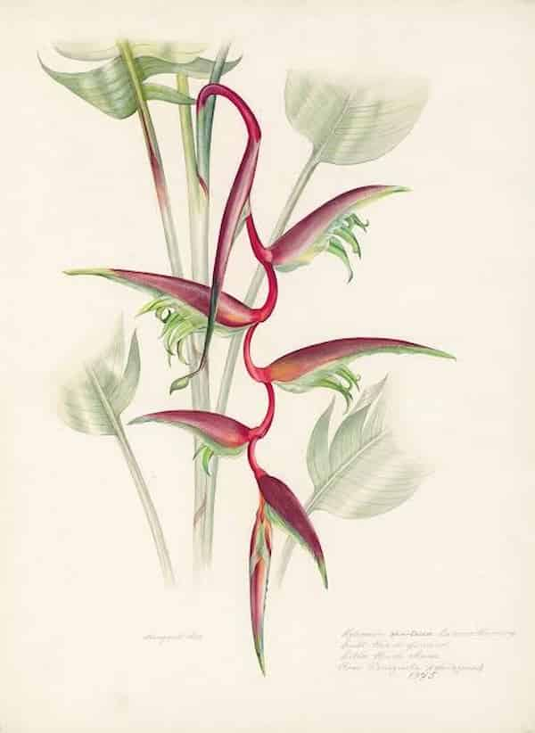
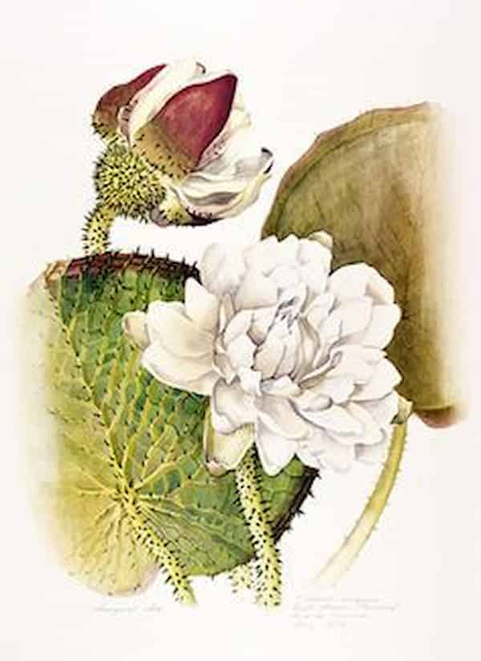